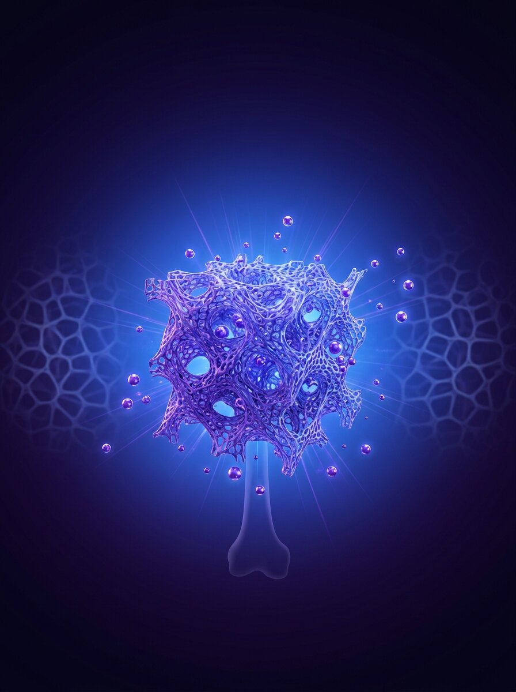
Do defeito ósseo crítico ao implante bioimpresso paciente-específico. Um guia prático para ortopedistas, cirurgiões bucomaxilofaciais e pesquisadores em engenharia tecidual musculoesquelética.
Título: Biofabricação em Ortopedia — do defeito ósseo crítico ao implante bioimpresso paciente-específico
Autoria científica: Equipe editorial Quantis Biotechnology + BIA Academy
Coordenação: Janaina Dernowsek, PhD · CEO Quantis Biotechnology
Revisão técnica: Comitê científico BIA Academy
Edição: 1ª edição, outubro de 2026
Formato: PDF A4 · 68 páginas · cores
Público-alvo: Médicos ortopedistas, cirurgiões bucomaxilofaciais, residentes, pós-graduandos em engenharia biomédica, pesquisadores em biofabricação e engenharia tecidual, gestores de inovação em saúde
Natureza: Material educacional complementar ao curso BIA Academy. Compilado de literatura científica open-access (CC-BY) + conteúdo original.
Direitos de imagens: As fotografias científicas reproduzidas são de artigos open-access publicados sob Creative Commons Attribution 4.0 (CC-BY 4.0). Todos os créditos preservados nas legendas. As ilustrações originais são de autoria da Quantis Biotechnology.
Como citar: Dernowsek J. et al. Biofabricação em Ortopedia. BIA Academy / Quantis Biotechnology, 1ª ed., 2026. Disponível em: biaquantis.bio/library
Aviso médico: Este material tem finalidade estritamente educacional. As condutas descritas não substituem avaliação clínica individualizada. Produtos bioimpressos para uso humano requerem aprovação regulatória específica (ANVISA / FDA).
© 2026 Quantis Biotechnology. Todos os direitos reservados.
Distribuição gratuita autorizada em sua forma íntegra. Reprodução parcial permitida com citação da fonte.
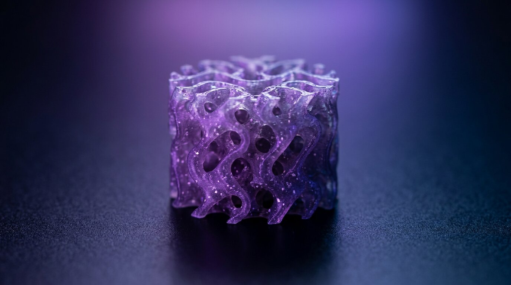
Dois milhões de enxertos ósseos por ano no mundo. Metade com complicações do sítio doador. A engenharia tecidual promete resolver o que a cirurgia reconstrutiva ainda não conseguiu.
O osso é o segundo tecido mais transplantado do corpo humano, atrás apenas do sangue. Estima-se que mais de 2 milhões de procedimentos de enxerto ósseo sejam realizados anualmente no mundo, com um mercado global que ultrapassou US$ 3,2 bilhões em 2023 e deve chegar a US$ 5,2 bilhões em 2030 (Grand View Research). Só no Brasil, o DATASUS registra mais de 60 mil cirurgias ortopédicas por ano envolvendo defeitos ósseos que exigem enxerto — e esse número é subestimado.
O gatilho mais comum é trauma: acidentes de trânsito, quedas, armas de fogo. Em segundo lugar vêm ressecções oncológicas (osteossarcoma, condrossarcoma, metástases ósseas). Em terceiro, falhas de prótese: cerca de 10% dos pacientes que recebem artroplastia de quadril ou joelho precisam de revisão em até 20 anos, muitas vezes com perda óssea periprotética significativa. E, por fim, há a área maxilofacial: enxerto alveolar para implantes dentários, correção de fissuras labiopalatinas, reconstrução pós-trauma.
O padrão-ouro histórico é o autoenxerto da crista ilíaca. Osso vivo, osteocondutor, osteoindutor e osteogênico — reúne os três pilares da regeneração óssea. Mas tem um preço alto: até 25% dos pacientes relatam dor crônica no sítio doador seis meses após a cirurgia (Dimitriou et al., 2011, DOI: 10.1186/1741-7015-9-66). Hematomas, infecção, parestesia do nervo cutâneo lateral da coxa e fratura iliaca estão descritos.
Além disso, há um limite físico: a crista ilíaca de um adulto fornece no máximo 25-30 cm³ de osso esponjoso. Para defeitos ósseos críticos — tipicamente definidos como aqueles que não cicatrizam espontaneamente dentro da vida do paciente (geralmente >5 cm em diáfise de ossos longos) — essa quantidade simplesmente não é suficiente.
As alternativas tradicionais têm limitações próprias:
| Alternativa | Vantagens | Limitações |
|---|---|---|
| Alograft (banco de ossos) | Volume ilimitado, sem morbidade do doador | Risco de transmissão de doenças, resposta imune, osteointegração mais lenta, custo R$ 2.000-15.000 |
| Xenograft (osso bovino) | Baixo custo, disponibilidade | Rejeição imunológica, risco teórico de príons, baixa osteoindução |
| Substitutos sintéticos (HA, β-TCP) | Disponibilidade, sem rejeição | Osteocondução sem osteoindução, mecânica frágil, degradação lenta |
| Fatores de crescimento (BMP-2 recombinante) | Osteoindução comprovada | Custo R$ 15.000-40.000, efeitos adversos (edema, formação heterotópica, câncer em uso cervical) |
A engenharia tecidual aplicada à ortopedia propõe um novo paradigma: ao invés de retirar osso de um lugar para colocar em outro, construir o osso que falta, in vitro ou in situ, combinando três elementos: um scaffold tridimensional biodegradável, células-tronco do próprio paciente e sinais biológicos (fatores de crescimento, nanotopografia, vascularização).
"The ultimate goal of bone tissue engineering is to design implants that match the mechanical, structural and biological requirements of native bone, promoting integration and gradual replacement by healthy tissue." Hutmacher DW, Biomaterials 2000
Esse paradigma começou a materializar-se nos últimos 10 anos, com três convergências tecnológicas: (1) bioimpressão 3D permitindo scaffolds paciente-específicos a partir de tomografias; (2) biomateriais compósitos (PCL + hidroxiapatita, biovidros bioativos) com equilíbrio inédito entre resistência mecânica e bioatividade; (3) células-tronco mesenquimais autólogas expandidas rotineiramente em laboratórios clínicos.
Resultado: casos clínicos reais já publicados em revistas de alto impacto. Em 2022, a 3DBio Therapeutics implantou com sucesso uma orelha bioimpressa viva em uma paciente com microtia (Zopf et al., New England Journal of Medicine, 2013, DOI: 10.1056/NEJMc1206319). No Brasil, o Instituto Gandu em Pernambuco acumula mais de 150 implantes cranianos personalizados em pacientes do SUS. E dezenas de ensaios clínicos de scaffolds para regeneração óssea estão em andamento no ClinicalTrials.gov.
Até 2030, estima-se que mais de 30% dos enxertos ósseos complexos poderão ser substituídos por constructos bioimpressos paciente-específicos. O ortopedista que entender o processo hoje — mesmo sem operar a impressora — terá vantagem competitiva relevante na próxima década. Este e-book é o seu ponto de partida.
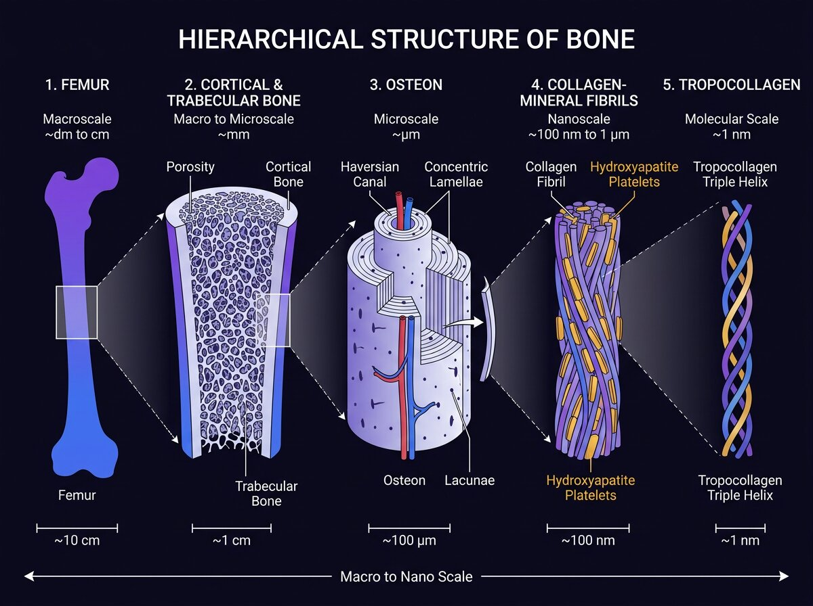
O osso é um material biológico hierárquico, com propriedades que mudam em sete ordens de grandeza — do femur ao tropocolágeno. Compreender essa hierarquia é o pré-requisito para projetar o que vai substituí-lo.
O osso cortical (compacto) e o osso trabecular (esponjoso) formam uma arquitetura que varia em propriedades mecânicas, porosidade e vascularização conforme a função. O cortical, com porosidade inferior a 10% e módulo de elasticidade de 15-20 GPa, é o responsável pela sustentação de carga. O trabecular, com porosidade de 50-90% e módulo de 0,1-2 GPa, aloja a medula óssea, absorve impacto e sofre remodelamento rápido.
No osso cortical, a unidade estrutural é o osteon — cilindros de 200-300 μm de diâmetro que correm paralelos ao eixo longo do osso, cada um atravessado por um canal de Havers contendo vasos sanguíneos, nervos e vasos linfáticos. Os osteons se conectam entre si por canais de Volkmann, formando uma rede vascular tridimensional densa.
No osso trabecular, as trabéculas se organizam ao longo das linhas de tensão principais (lei de Wolff, 1892). A espessura trabecular (Tb.Th) varia de 100 a 300 μm, com separação (Tb.Sp) de 300-800 μm — valores que viraram parâmetros-alvo para o projeto de scaffolds que simulam esse tecido.
| Célula | Função | Origem / Vida |
|---|---|---|
| Osteoblastos | Produzem matriz óssea (colágeno I + hidroxiapatita) | Derivam de MSC medular. Vida ativa: 3 meses |
| Osteócitos | Mecanossensores, regulam remodelamento (via esclerostina) | Osteoblastos aprisionados em lacunas. Vida: 10-25 anos |
| Osteoclastos | Reabsorvem matriz óssea (bomba de prótons) | Fusão de monócitos. Vida: 2 semanas |
| Células de revestimento (bone lining) | Barreira protetora na superfície óssea quiescente | Osteoblastos "aposentados" |
O osso é continuamente reabsorvido e reformado ao longo da vida. A cada ano, cerca de 10% do esqueleto humano é renovado. Esse processo é orquestrado pela Unidade Multicelular Básica (BMU), uma estrutura temporária de 1-2 mm de comprimento que avança lentamente pelo osso.
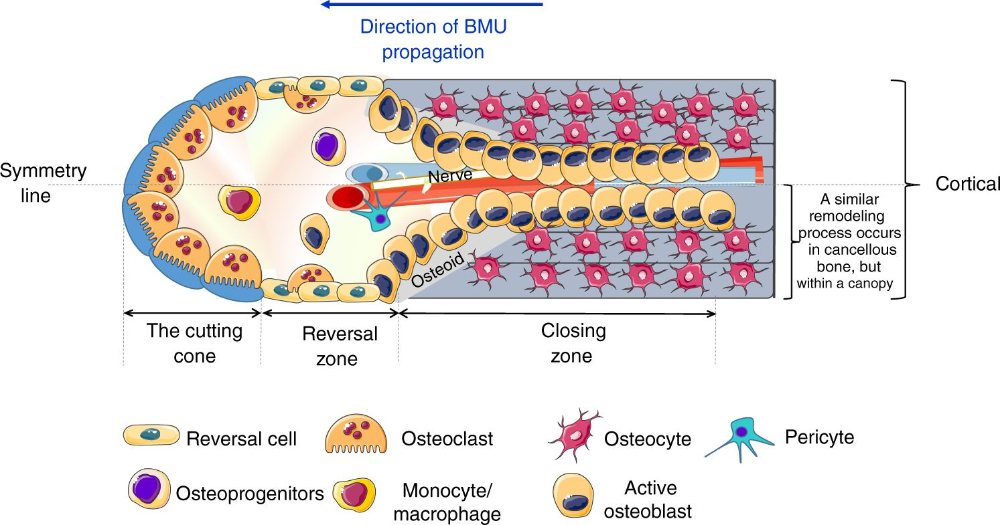
A BMU opera em três fases sequenciais:
Qualquer scaffold ortopédico que pretenda ser integrado ao osso receptor precisa ser compatível com a BMU: permitir infiltração vascular (pore size ≥100 μm), degradar na velocidade do remodelamento (6-24 meses) e não liberar partículas que ativem resposta inflamatória crônica capaz de bloquear osteoclastos.
Nenhum defeito ósseo com mais de 200 μm de distância até o vaso mais próximo cicatriza sem neovascularização. Essa é a famosa "regra dos 200 μm" (Jain et al., 2005, DOI: 10.1038/nmat1421), um dos conceitos mais citados em engenharia tecidual. Além desse limite, as células no interior do constructo entram em hipóxia severa, morrem por necrose e são substituídas por tecido fibroso — não osso funcional.
A vascularização do osso ocorre por dois mecanismos complementares:
Scaffolds ortopédicos modernos frequentemente incorporam estratégias pró-angiogênicas: liberação controlada de VEGF, pré-vascularização in vitro com co-cultura de HUVEC (células endoteliais de veia umbilical) + MSC, ou canais sacrificiais que depois são semeados com células endoteliais (técnica de Jennifer Lewis, Harvard).
Nem todo osso é igual. Essa é uma das lições mais importantes para quem projeta scaffolds ortopédicos:
| Sítio | Tipo predominante | Carga mecânica | Vascularização | Taxa de remodelamento |
|---|---|---|---|---|
| Diáfise femoral | Cortical denso | Alta compressão + torção | Média (Haversian) | Lenta (2-10 anos) |
| Epífise tibial | Trabecular | Compressão alta | Alta (medular) | Rápida (meses) |
| Calota craniana | Cortical fino + diploe trabecular | Baixa | Pericraniana + diploe | Muito lenta |
| Mandíbula | Cortical denso | Mastigação (ciclos de 1 Hz) | Alveolar inferior | Média |
| Vértebra | Trabecular + cortical fino | Compressão axial | Alta (medular) | Rápida |
A implicação prática: um scaffold de PCL+HA que funciona na calota craniana (baixa carga) pode falhar catastroficamente na diáfise femoral (compressão + torção). O projeto precisa ser tecido-específico.
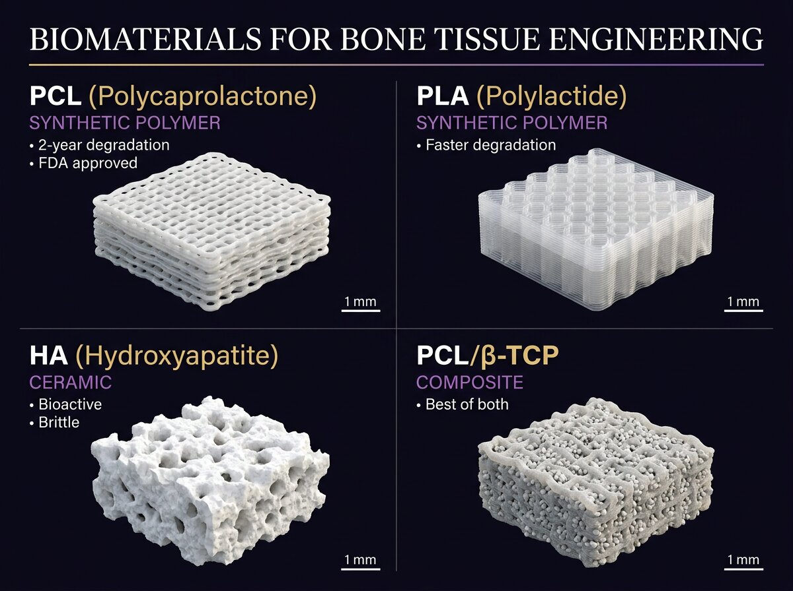
PCL, PLA, hidroxiapatita, β-TCP, biovidro. Nenhum material isolado atende todos os requisitos ortopédicos. A solução, em 90% dos casos, está nos compósitos.
Williams (2008, DOI: 10.1016/j.biomaterials.2008.04.023) propôs a definição canônica de biomaterial: "uma substância projetada para interagir com sistemas biológicos para avaliar, tratar, aumentar ou substituir qualquer tecido, órgão ou função do corpo". Em ortopedia, essa interação precisa simultaneamente ser (1) mecanicamente compatível com o osso nativo, (2) bioativa o suficiente para estimular osteogênese e vascularização, e (3) biodegradável em cronograma compatível com a regeneração.
O PCL é o polímero mais utilizado em bioimpressão ortopédica, aprovado pelo FDA desde a década de 1970. Suas propriedades-chave:
O PLA tem degradação mais rápida (6-24 meses) e módulo mais alto (2-4 GPa) que o PCL, mas libera ácido lático durante degradação — pH localmente ácido pode induzir inflamação e reabsorção óssea indesejada. Por isso, em ortopedia, o PLGA (copolímero PLA+PGA) é mais usado, com proporção ajustável para controlar velocidade de degradação.
Fórmula química: Ca₁₀(PO₄)₆(OH)₂ — é a fase mineral predominante do osso nativo (constitui 65% da massa óssea). Como material de scaffold, oferece bioatividade excelente: osteoblastos aderem, proliferam e depositam novo osso diretamente sobre sua superfície. Problema: é frágil (módulo alto mas resistência à tração baixa), por isso raramente usada pura — quase sempre em compósitos.
Fórmula: Ca₃(PO₄)₂. Mais solúvel que a HA, por isso degrada mais rápido (6-18 meses), liberando íons Ca²⁺ e PO₄³⁻ que estimulam diretamente a osteogênese. Combinação popular: 60% HA + 40% β-TCP (BCP, biphasic calcium phosphate) — equilibra bioatividade com cinética de reabsorção.
Descobertos por Larry Hench em 1969, os biovidros formam uma camada superficial de hidroxiapatita quando em contato com fluidos corporais, promovendo integração óssea direta ("bonding to bone"). O Bioglass® 45S5 (46,1% SiO₂ + 24,4% Na₂O + 26,9% CaO + 2,6% P₂O₅) é um clássico da ortopedia, usado em pastas injetáveis, grânulos e scaffolds porosos.
Na prática clínica atual, 90% dos scaffolds ortopédicos bioimpressos são compósitos. A estratégia é: usar um polímero sintético (PCL ou PLGA) como matriz portadora da geometria e da resistência mecânica, e incorporar partículas cerâmicas bioativas (HA, β-TCP ou biovidro) para dar bioatividade superficial.
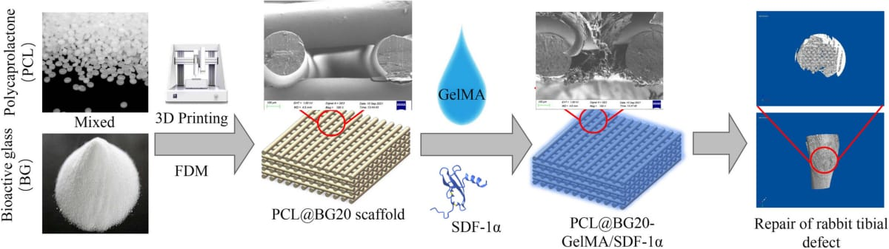
| Compósito | Proporção típica | Aplicação clínica | Referência-chave |
|---|---|---|---|
| PCL + HA | 80:20 a 60:40 | Calota, maxilofacial, defeitos pequenos | Hutmacher 2000, QUT |
| PCL + β-TCP | 70:30 | Defeito ósseo com regeneração ativa | Osteopore (Singapura) |
| PLGA + HA | 80:20 | Regeneração rápida (odontologia) | MedPrin (China) |
| PCL + Bioglass 45S5 | 80:20 | Integração acelerada | Boccaccini (Erlangen) |
O PCL deforma a 60°C — não pode ser autoclavado. Métodos aceitos: óxido de etileno (ETO) ou radiação gama 25 kGy (cuidado: pode reduzir massa molecular do polímero). O biovidro é inerte a essas duas rotas. Sempre valide o impacto da esterilização em todas as propriedades (mecânica, degradação, bioatividade) antes de usar em paciente.
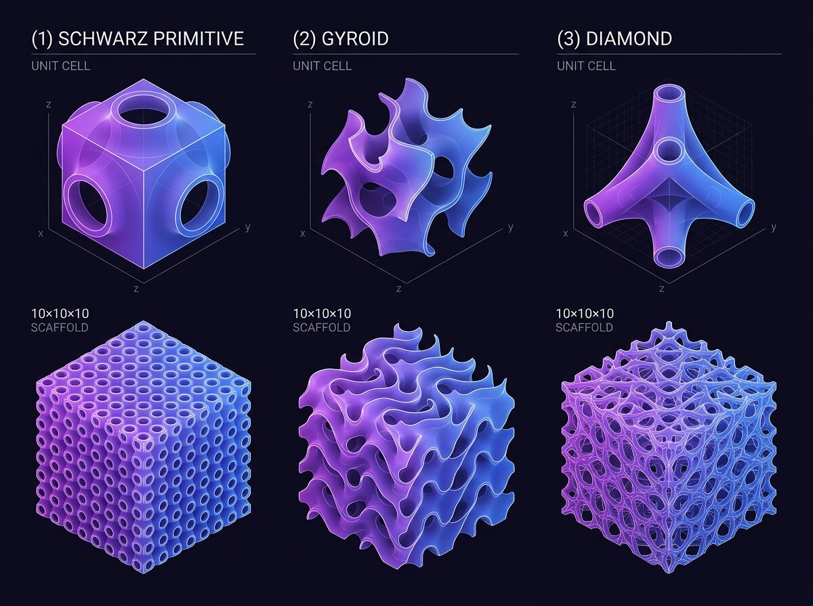
A geometria interna do scaffold é tão importante quanto o material. Nos últimos cinco anos, arquiteturas inspiradas em superfícies mínimas (TPMS) e padrões Voronoi mudaram o jogo.
Dois scaffolds feitos do mesmo material podem ter desempenho clínico completamente diferente dependendo da arquitetura interna. Essa é uma das descobertas mais importantes da última década em engenharia tecidual óssea. A geometria determina simultaneamente: resistência mecânica, permeabilidade a nutrientes e células, taxa de degradação (área superficial exposta), e capacidade de induzir diferenciação celular osteogênica via mecanossinalização.
Hollister (2005, DOI: 10.1038/nmat1421) consolidou o princípio: "the scaffold architecture is the critical determinant of both biological and mechanical performance". Daí nasceram duas décadas de pesquisa sobre quais parâmetros arquitetônicos otimizar.
| Parâmetro | Faixa recomendada para osso | Impacto biológico |
|---|---|---|
| Porosidade total | 60-85% | >60% para permitir vascularização; <85% para preservar mecânica |
| Tamanho de poro (pore size) | 300-500 μm | <100 μm = sem vascularização; >600 μm = adesão celular prejudicada |
| Interconectividade | >95% | Poros isolados = células morrem; interconexão permite difusão |
| Espessura do strut | 100-300 μm | Resistência mecânica; afeta tempo de degradação |
| Área superficial específica (SSA) | Alta é melhor | Mais área = mais adesão celular + mais bioatividade |
A referência mais citada sobre pore size ideal é Loh & Choong (2013), DOI: 10.1089/ten.teb.2012.0437, que compilou dados de dezenas de estudos: poros de 300-500 μm maximizam formação óssea; poros de 500-900 μm favorecem vascularização; abaixo de 100 μm, apenas fibrose.
As superfícies mínimas triplamente periódicas (TPMS) são geometrias matematicamente definidas que minimizam a área superficial para um volume fechado. Descobertas no século XIX pelos matemáticos Schwarz e Gyroid, elas voltaram ao palco na última década como a arquitetura ideal para scaffolds ósseos, pelos seguintes motivos:
O gyroid tornou-se especialmente popular. Yánez et al. (2018, DOI: 10.1016/j.msec.2017.11.037) demonstrou que scaffolds gyroid de titânio para substituição de epífise femoral apresentaram 66% de redução de peso em relação a implantes maciços, com mecânica suficiente — e os efeitos benéficos de stress shielding reduzido no osso adjacente.
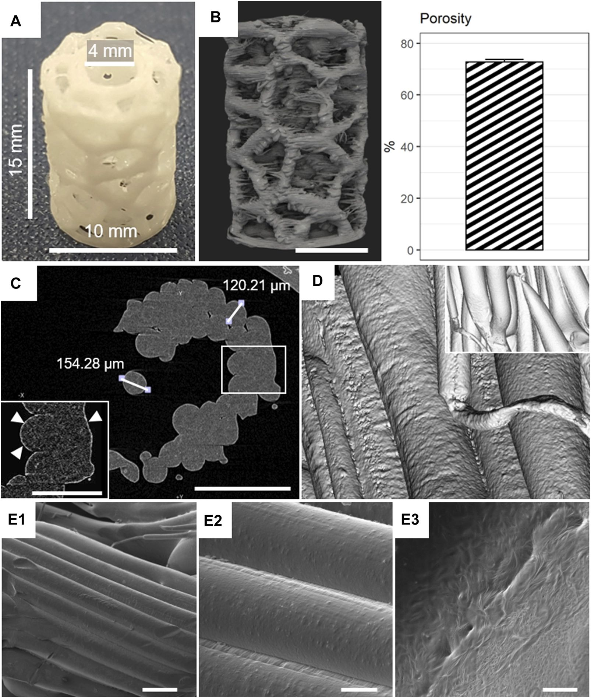
O padrão Voronoi — gerado a partir de pontos aleatórios no espaço, formando células poligonais irregulares — é inspirado diretamente na organização do osso trabecular nativo. Oferece aparência mais "biológica" e desempenho mecânico comparável às TPMS, com a vantagem de maior permeabilidade a células-tronco migrando do osso receptor.
Um scaffold com rigidez muito superior ao osso adjacente causa stress shielding: o osso recebe menos carga mecânica, interpreta como "não necessário" e sofre reabsorção. Esse foi o grande problema das próteses metálicas (titânio: 110 GPa, aço inox: 200 GPa) implantadas em jovens — perda óssea periprotética levou a soltura asséptica.
O princípio proposto por Discher (2005, DOI: 10.1126/science.1116995) na célula se aplica também ao tecido: as células "sentem" o módulo mecânico e se diferenciam de acordo. MSC em substrato de 20-40 kPa diferenciam em osteoblastos; em 1-10 kPa, em miofibras; em 0,1-1 kPa, em neurônios.
Para scaffold ortopédico, mire em um módulo elástico entre 50% e 150% do osso adjacente. Para osso trabecular (~500 MPa), isso significa 250-750 MPa. Para osso cortical (~15 GPa), significa 7-22 GPa. Alcançar isso com polímero puro é impossível — por isso compósitos cerâmicos.
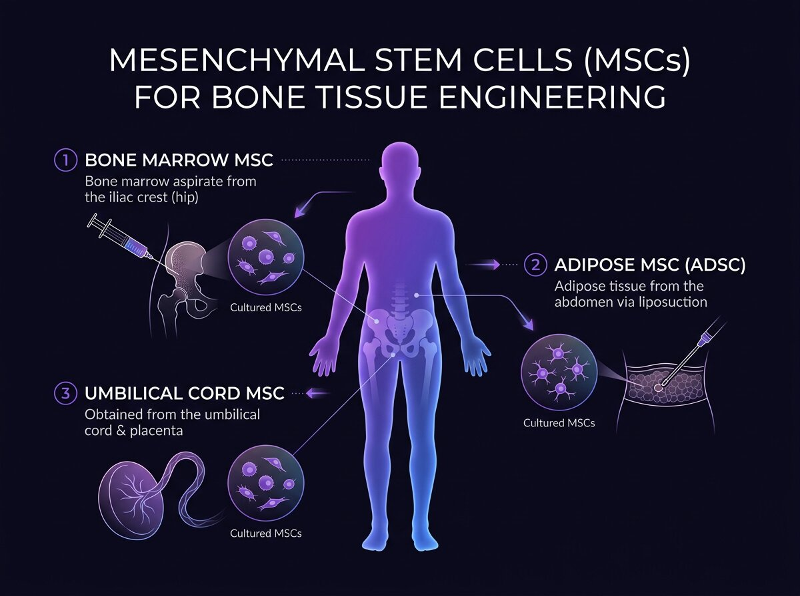
MSC medular, MSC adiposa, MSC umbilical, HUVEC para pré-vascularização. Qual escolher, quantas usar, como expandir sem perder potencial osteogênico.
Desde a descoberta histórica de Friedenstein (anos 1970) de que a medula óssea contém células aderentes com capacidade de formar colônias (CFU-F) e diferenciar em osteoblastos, condrócitos e adipócitos, as células-tronco mesenquimais (MSC) tornaram-se o tipo celular mais utilizado em engenharia tecidual óssea. A sociedade internacional ISCT definiu em 2006 os critérios mínimos: aderência plástica, expressão de CD73/CD90/CD105 + ausência de CD34/CD45, e capacidade trilinhagem.
| Fonte | Rendimento típico | Potencial osteogênico | Vantagem | Limitação |
|---|---|---|---|---|
| BM-MSC (medula) | 0.01-0.001% das células mononucleares | Alto (padrão-ouro) | Mais estudada, melhor diferenciação óssea | Procedimento invasivo (aspirado); rendimento baixo |
| ADSC (adiposo) | 5-10% da fração estromal vascular | Alto | Procedimento menos invasivo; alto rendimento (100-500k células por grama) | Qualidade varia com IMC e idade do doador |
| UC-MSC (umbilical) | Alto | Médio-alto (jovem = mais plástica) | Fonte alogênica aceita; sem invasão do paciente | Requer banco de cordão umbilical; questões éticas |
| iPSC (reprogramadas) | Virtualmente ilimitado | Variável (depende do protocolo) | Expansão infinita; paciente-específico | Alto custo; risco teórico de teratoma |
Densidade celular dentro de um scaffold ou bioink segue uma lógica contra-intuitiva. Muitos iniciantes pensam que "mais células = melhor regeneração". Está errado. Dentro de certos limites, aumentar a densidade cria problemas de nutrientes: as células no centro ficam em hipóxia, consumem glicose antes dela chegar ao interior do scaffold, e produzem lactato que acidifica o microambiente.
Faixas recomendadas pela literatura:
Para avaliar se as células-tronco escolhidas realmente têm potencial osteogênico, o protocolo padrão é expor por 14-21 dias a um "meio osteogênico" contendo:
Após 14 dias, aplica-se a coloração de Alizarin Red S, que forma complexos vermelho-alaranjados com cálcio depositado na matriz. Quantificação: solubilização com cetilpiridinium chloride 10% e leitura a 405 nm.
Para constructos espessos (>3 mm), a abordagem moderna é pré-vascularizar in vitro antes de implantar. A técnica mais aceita é a co-cultura 1:1 de MSC + HUVEC (Human Umbilical Vein Endothelial Cells), que após 7-10 dias em meio EGM-2 forma redes capilares primitivas visíveis por imunofluorescência CD31+.
"The 200-micrometer rule is probably the single most important geometrical constraint in tissue engineering. Everything we design must respect it." Rakesh Jain, Harvard Medical School · Nature Materials 2005
Co-cultura MSC+HUVEC em meio osteogênico padrão faz as HUVEC morrerem (não toleram dexametasona). Co-cultura em EGM-2 reduz diferenciação osteogênica. A solução é um meio híbrido 50:50 ou troca sequencial (3 dias EGM-2 → 7 dias osteo). Essa é a arte da co-cultura.
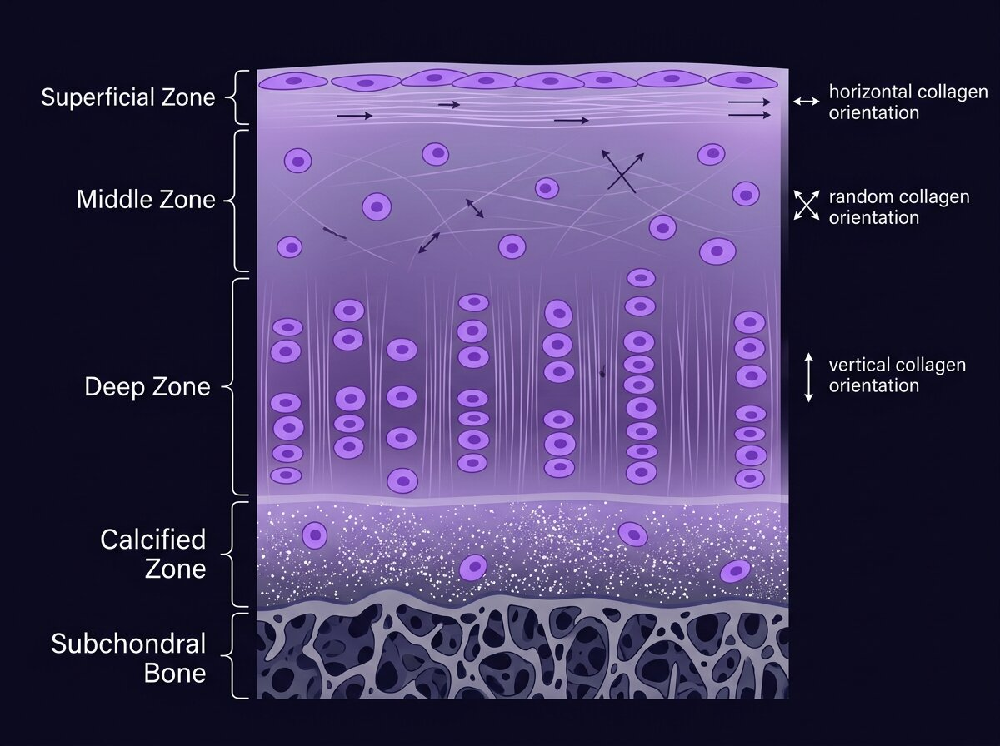
Avascular, aneural, alinfática, hipóxica. A cartilagem articular reúne todas as condições que dificultam regeneração. Entender por quê é o primeiro passo para projetar substitutos funcionais.
A cartilagem articular hialina, que reveste as superfícies ósseas em articulações sinoviais, tem uma capacidade regenerativa praticamente nula no adulto. Isso explica por que a osteoartrite afeta mais de 300 milhões de pessoas no mundo e por que os tratamentos atuais (viscosuplementação, microfratura, mosaicoplastia, ACI) oferecem alívio sintomático parcial — mas não regeneram cartilagem hialina verdadeira. O que se forma, em geral, é fibrocartilagem (colágeno tipo I), mecanicamente inferior e com durabilidade limitada.
Três características biológicas explicam a dificuldade:
Esse é o maior problema técnico de todo projeto de bioimpressão de cartilagem. Quando MSC são diferenciadas em condrócitos usando o protocolo tradicional (TGF-β3 + dexametasona + BMP-6), elas inicialmente produzem colágeno II (bom). Mas após 3-4 semanas, muitas sofrem hipertrofia: ganham tamanho (até 10×), começam a expressar colágeno X e MMP-13, e a matriz mineraliza. O resultado é um tecido que se parece com cartilagem endocondral (precursora de osso), não com cartilagem articular madura.
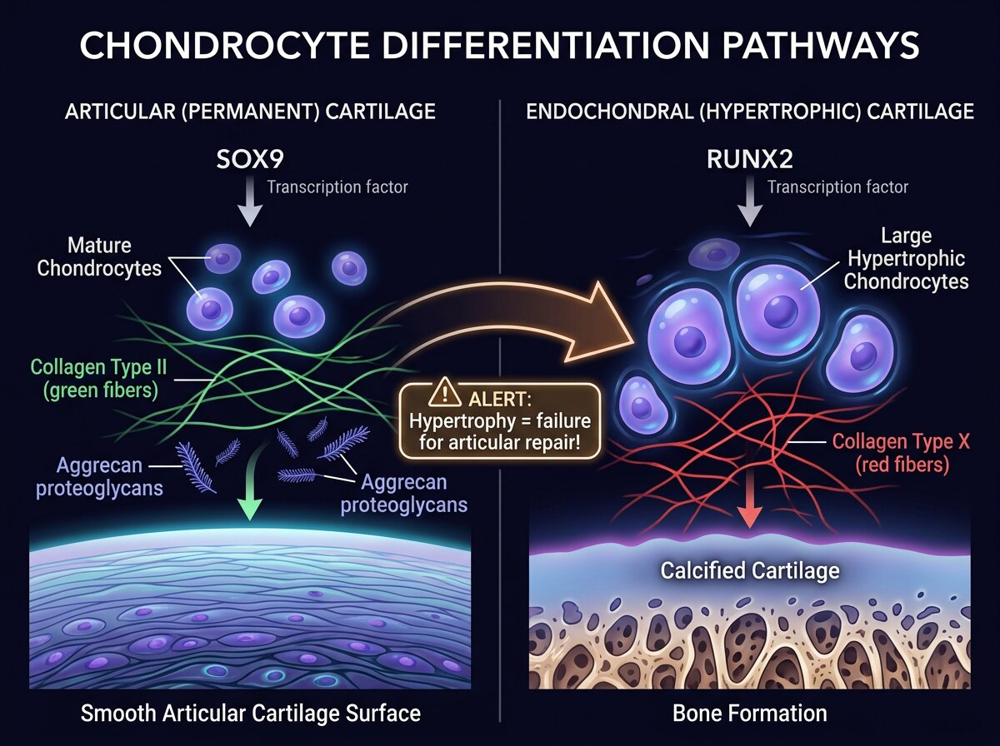
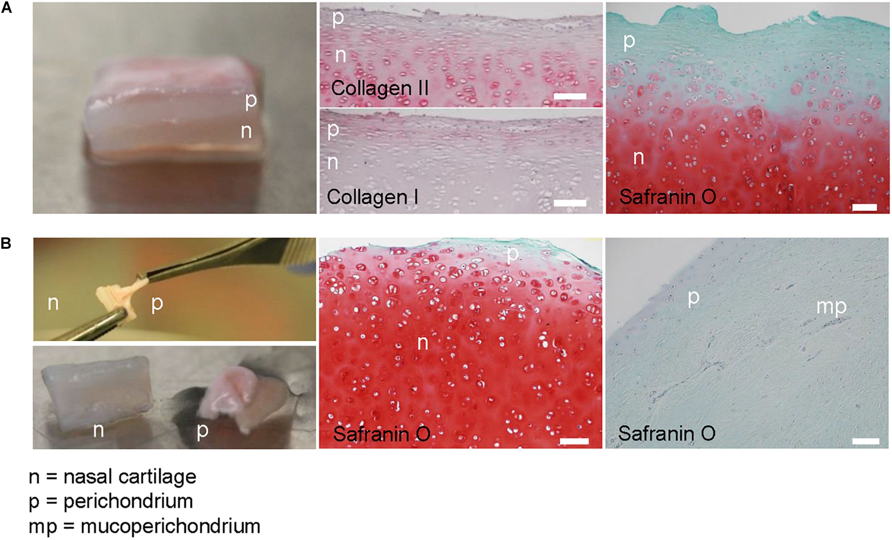
| Abordagem | Bioink | Células | Status clínico |
|---|---|---|---|
| Scaffold rígido + condrócitos | PCL | Condrócitos autólogos | Fase II (AuriNovo da 3DBio) |
| Bioink GelMA + MSC | GelMA + ácido hialurônico | MSC medular ou ADSC | Pré-clínico avançado |
| Scaffold alginato zonal | Alginato com gradiente | Condrócitos + MSC | Pré-clínico (ETH Zurich) |
| Scaffold-free (esferoides) | Sem bioink | Esferoides de condrócitos | Pré-clínico (Kenzan Scaffold-Free Bio-Printing) |
Estratégias ativas: (a) usar condrócitos autólogos ao invés de MSC (começa já no fenótipo correto); (b) adicionar parathyroid hormone-related protein (PTHrP) ao meio — inibe hipertrofia; (c) manter hipóxia 5% O₂ na cultura; (d) usar nicho zonal 3D que reproduz os gradientes mecânicos naturais.
AuriNovo, Instituto Gandu, mandíbula impressa, reconstrução craniana, Humacyte vascular. Os casos que já aconteceram em pacientes vivos — e o que podemos aprender com eles.
Em 2 de junho de 2022, a 3DBio Therapeutics, em parceria com o Microtia-Congenital Ear Deformity Institute, anunciou o primeiro implante bem-sucedido em paciente humano de uma orelha bioimpressa viva: o AuriNovo. A paciente, uma mulher de 20 anos com microtia unilateral, recebeu uma orelha produzida a partir de uma biópsia de 0,5 g de cartilagem do ouvido saudável — condrócitos foram expandidos em cultura por 8 semanas, misturados a um bioink de colágeno hialurônico e impressos em formato personalizado baseado na orelha contralateral.
Esse foi um marco histórico por três motivos:
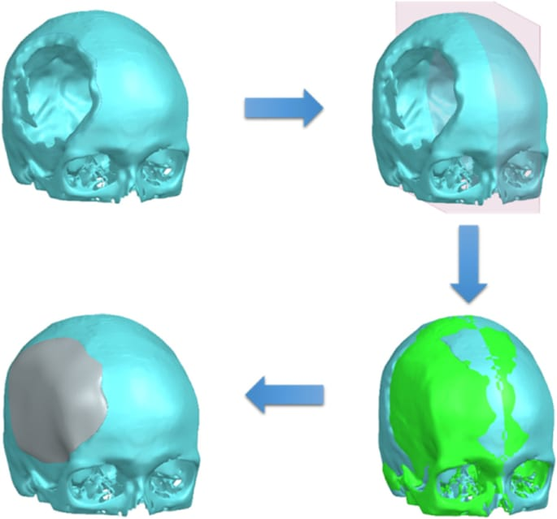
A reconstrução craniana é hoje a aplicação clínica mais madura da impressão 3D em ortopedia e correlatas. No Brasil, o Instituto Gandu (Pernambuco), fundado por engenheiros biomédicos em parceria com o SUS, já produziu mais de 150 implantes cranianos personalizados em PEEK (polietereterketona) e PMMA. Em serviços particulares, Materialise (Bélgica), Meticuly (Tailândia) e OneTitanium (Austrália) oferecem implantes em titânio.
Em 2012, no hospital Orbis Medical Center (Holanda), uma paciente de 83 anos com osteomielite mandibular recebeu uma mandíbula completa impressa em titânio por sinterização a laser (LayerWise/Materialise). O implante pesava 108 gramas, foi personalizado a partir de TC, e a cirurgia durou 4 horas — contra 20+ horas de uma reconstrução por microcirurgia convencional. A paciente teve alta em 4 dias.
"Para pacientes idosos que não suportariam uma cirurgia reconstrutiva longa, o implante impresso 3D é uma alternativa que literalmente salva vidas." Jules Poukens, cirurgião responsável · 2012
A Humacyte (EUA) desenvolveu o Human Acellular Vessel (HAV), um vaso sanguíneo bioengenheirado produzido in vitro a partir de células musculares lisas humanas cultivadas sobre scaffold de PGA. Após 8 semanas de cultura em bioreator, o scaffold biodegrada e o vaso resultante é descelularizado (ficando apenas MEC). Já implantado em 100+ pacientes com doença renal terminal como acesso arteriovenoso para hemodiálise, com taxas de patência superiores a enxertos protéticos convencionais.
O Brasil tem produção científica expressiva na área. Alguns destaques:
μCT, histomorfometria, ensaios mecânicos de três pontos. O painel mínimo de caracterização que qualquer projeto ortopédico precisa ter — e os números que separam publicação de rejeição.
A tomografia computadorizada de alta resolução (micro-CT ou μCT) tornou-se a técnica mandatória para caracterizar scaffolds ósseos e implantes bioimpressos, tanto in vitro quanto in vivo. Resolução típica: 5-50 μm/voxel, suficiente para visualizar poros individuais e, após implante, novo osso formado dentro do scaffold. Equipamentos de referência: Scanco µCT 50, Bruker SkyScan 1172, PerkinElmer Quantum GX2.
Métricas-chave extraídas automaticamente pelo software CTAn/CTVox/Fiji BoneJ:
Apesar de μCT dar quantificação volumétrica, a histologia é indispensável para avaliar qualidade do osso neoformado: é osso lamelar maduro ou osso imaturo (woven)? Há vascularização? Reação inflamatória? Fibrose?
| Coloração | Alvo | Interpretação |
|---|---|---|
| H&E | Morfologia geral | Osso rosa, cartilagem azul-claro, fibrose azul-cinza |
| Tricrômio de Masson | Colágeno | Colágeno azul; útil para fibrose vs osso maduro |
| Von Kossa | Mineralização | Depósitos de cálcio ficam pretos |
| Alizarin Red S | Cálcio | Vermelho-alaranjado onde há cálcio |
| Safranin O | Proteoglicanos | Cartilagem fica vermelha intensa |
| Picrossirius Red | Colágeno I vs III (polarização) | Colágeno I: amarelo-laranja; III: verde |
Marcadores proteicos essenciais para validação de regeneração óssea:
Para scaffolds ortopédicos, os três ensaios obrigatórios são:
Para submissão de dossiê regulatório, os ensaios mecânicos devem seguir as normas: ASTM F2150-13 (caracterização mecânica de materiais ósseos), ASTM F2529-13 (determinação de porosidade), ISO 23317 (biomineralização em SBF — simulated body fluid).
| Modelo | Defeito típico | Vantagens | Limitações |
|---|---|---|---|
| Rato (calvária) | 5 mm diâmetro | Barato, muitos; defeito crítico bem definido | Metabolismo ósseo diferente do humano |
| Coelho (tíbia) | 5-10 mm | Osso maior, próximo do humano | Custo médio; precisa CEUA |
| Cão (fêmur) | 15-25 mm | Mecânica humana-like | Alto custo; questões éticas |
| Ovelha (tíbia) | 20-50 mm | Padrão regulatório para FDA/CE | Alto custo; infraestrutura rural |
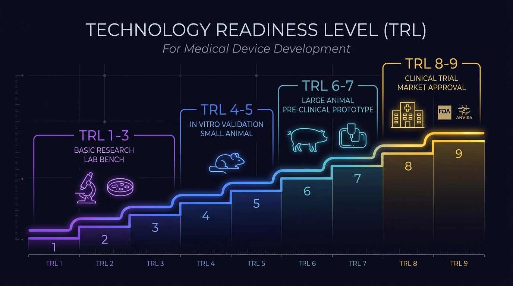
TRL 1 ao 9. Classes de risco. ISO 13485 e ISO 10993. O que separa um projeto de laboratório de um produto que chega ao paciente.
| Classe (ANVISA) | Equivalente FDA | Exemplo ortopédico | Via de aprovação |
|---|---|---|---|
| I | Class I | Scaffold de PCL puro para pesquisa | Notificação |
| II | Class II | Scaffold HA/PCL para enxerto ósseo | Registro + GMP |
| III | Class III (510(k)) | Scaffold bioativo com BMP | Registro + GMP + ensaio clínico |
| IV | Class III (PMA) | Scaffold com células autólogas (ATMP) | Registro + GMP + ensaio clínico multicêntrico |
Nos EUA, dispositivos médicos têm duas vias principais de aprovação:
No Brasil, a Resolução RDC 751/2022 regula dispositivos médicos. Para produtos de terapia celular avançada (ATMP), aplica-se a RDC 338/2020. Pontos-chave:
Paolo Macchiarini implantou traqueias sintéticas em 8 pacientes no Karolinska Institute entre 2008-2014, pulando ensaios pré-clínicos e processos regulatórios. Sete pacientes morreram. A investigação do New England Journal of Medicine (2016) revelou fraude científica, violação de ética e ausência de aprovação regulatória adequada. Esse caso virou o referencial do que não fazer em medicina regenerativa.
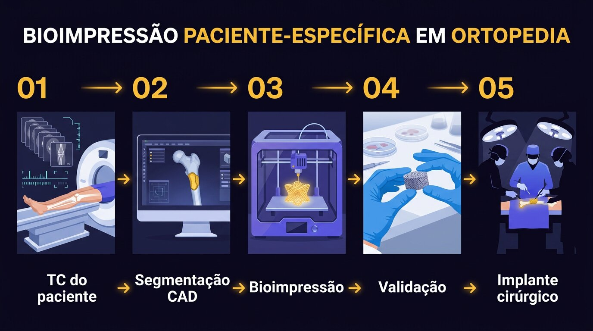
Guia prático: parceria laboratório-clínica, pedido de produto sob medida, timeline realista, custos, armadilhas comuns. O passo-a-passo para quem quer entrar no campo hoje.
| Fase | Duração típica | Responsável principal |
|---|---|---|
| TC do defeito + planejamento cirúrgico | 1 semana | Ortopedista + radiologista |
| Segmentação CAD + validação com cirurgião | 1-2 semanas | Engenheiro biomédico |
| Impressão + esterilização + QC | 1-2 semanas | Laboratório/empresa de biofabricação |
| Entrega + agendamento cirúrgico | 1 semana | Equipe clínica |
| Total (sem células) | 4-6 semanas | |
| Adicional para scaffold com células autólogas | +6-8 semanas (expansão) | Laboratório de terapia celular |
| Item | Custo (R$) |
|---|---|
| TC de planejamento | 400-800 |
| Segmentação CAD + modelagem | 1.500-5.000 |
| Scaffold PCL/HA personalizado (até 50 cm³) | 3.000-15.000 |
| Scaffold com β-TCP ou biovidro | 5.000-25.000 |
| Scaffold com células autólogas (ATMP) | 30.000-100.000+ |
| Esterilização validada + QC | 1.000-3.000 |
| Procedimento completo (scaffold sem células) | 8.000-30.000 |
"A biofabricação não substitui o cirurgião — amplifica o que ele pode fazer. O ortopedista que entende os princípios do biomaterial e da célula entrega resultados que a cirurgia tradicional não consegue." Dietmar Hutmacher · Queensland University of Technology
| ADSC | Adipose-Derived Stem Cells — células-tronco mesenquimais derivadas de tecido adiposo |
| ATMP | Advanced Therapy Medicinal Product — produto de terapia avançada (células, genes, tecidos engenheirados) |
| BCP | Biphasic Calcium Phosphate — mistura HA + β-TCP, equilibra bioatividade e cinética |
| BMP-2 | Bone Morphogenetic Protein 2 — fator de crescimento osteoindutor |
| BMU | Basic Multicellular Unit — unidade do remodelamento ósseo |
| BV/TV | Bone Volume / Total Volume — fração mineralizada em μCT |
| FDM/FFF | Fused Deposition Modeling / Fused Filament Fabrication — impressão 3D por extrusão de filamento termoplástico |
| GelMA | Gelatin Methacryloyl — gelatina modificada, foto-reticulável, bioink popular |
| GMP / BPF | Good Manufacturing Practices / Boas Práticas de Fabricação |
| HA | Hydroxyapatite — Ca₁₀(PO₄)₆(OH)₂, fase mineral do osso |
| HUVEC | Human Umbilical Vein Endothelial Cells — células endoteliais para pré-vascularização |
| iPSC | induced Pluripotent Stem Cells — células-tronco pluripotentes induzidas (Yamanaka 2006) |
| MSC | Mesenchymal Stem Cells — células-tronco mesenquimais |
| μCT | Micro-Computed Tomography — tomografia de alta resolução para scaffolds |
| PCL | Polycaprolactone — polímero sintético biodegradável |
| PLGA | Poly(lactic-co-glycolic acid) — copolímero biodegradável ajustável |
| SCA / ACI | Suspensão/Autologous Chondrocyte Implantation — implante de condrócitos autólogos |
| SOX9 / RUNX2 | Fatores de transcrição mestres de condrogênese e osteogênese, respectivamente |
| β-TCP | β-Tricalcium Phosphate — Ca₃(PO₄)₂, cerâmica reabsorvível |
| TPMS | Triply Periodic Minimal Surface — superfície mínima periódica (gyroid, Schwarz, diamond) |
| TRL | Technology Readiness Level — escala 1-9 de maturidade tecnológica |
A BIA Academy é a primeira plataforma de ensino 100% online, em português, dedicada à biofabricação aplicada à saúde humana. 12 módulos, aulas gravadas, mentoria com especialistas, acesso à plataforma BIA (assistente de IA especializado em biofabricação) e trilha prática até você projetar seu primeiro scaffold paciente-específico.